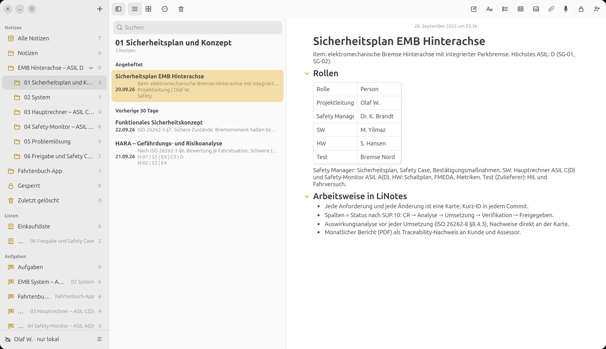
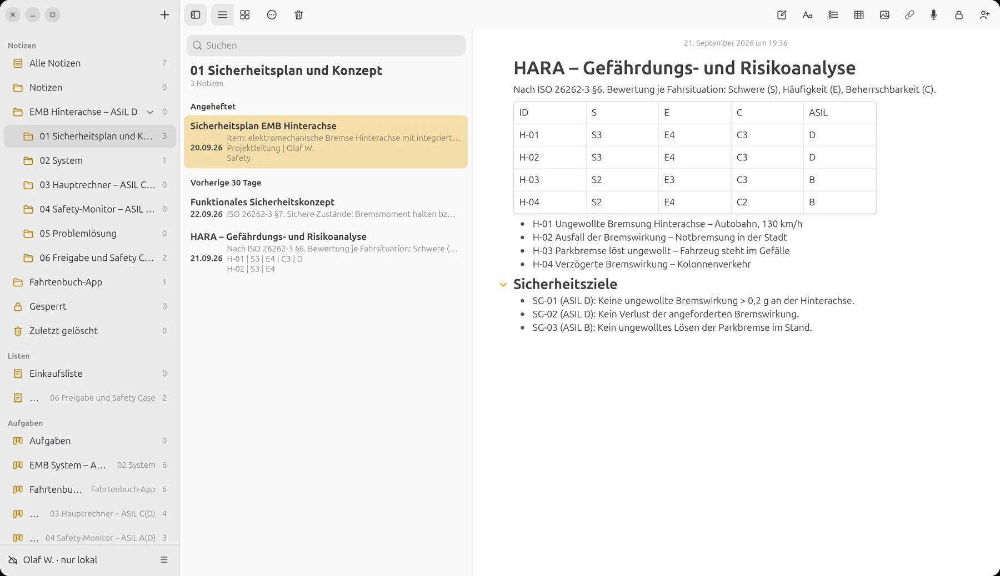
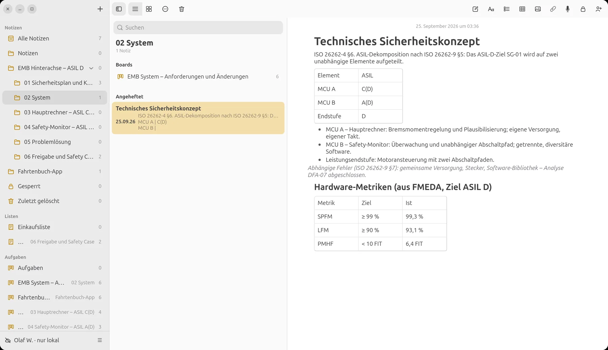
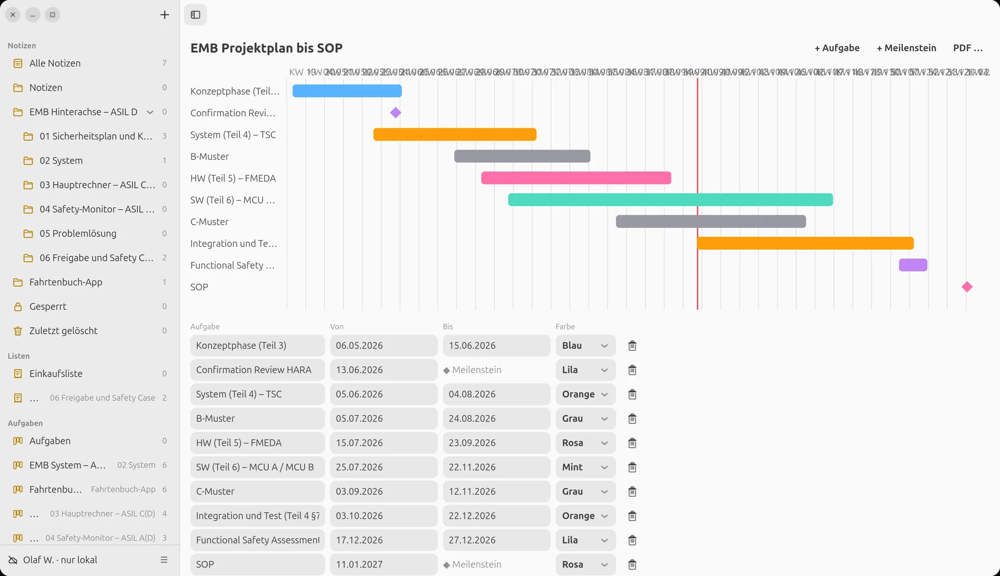
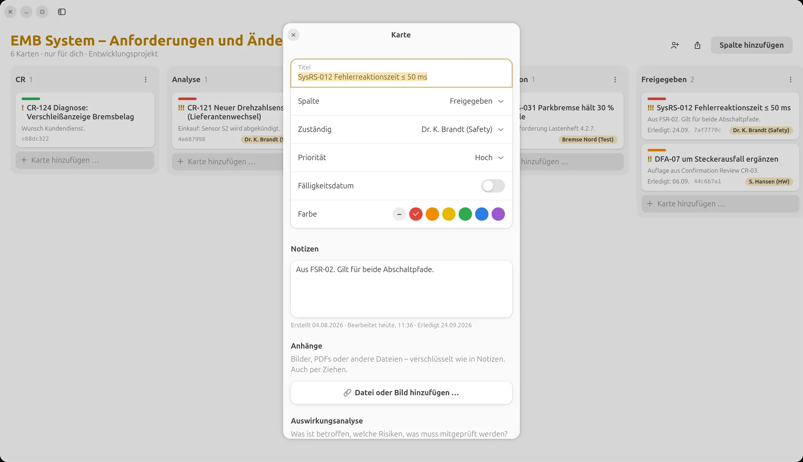
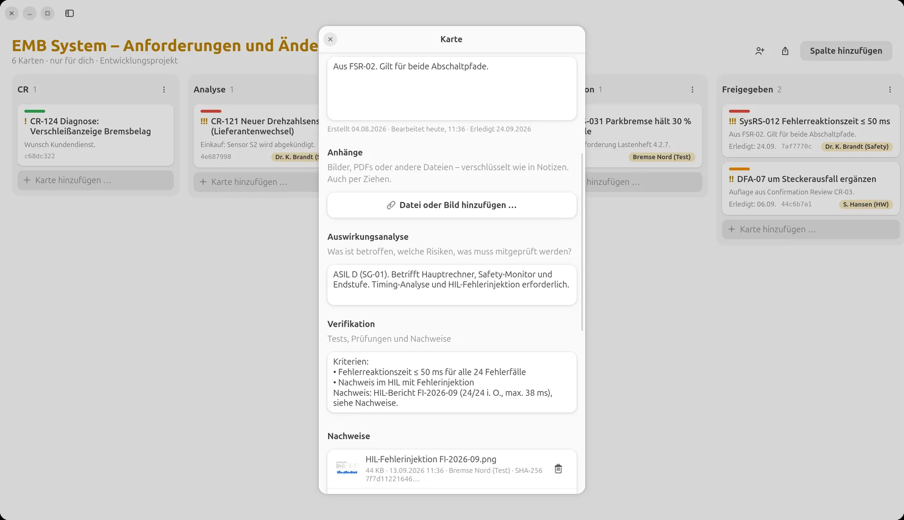
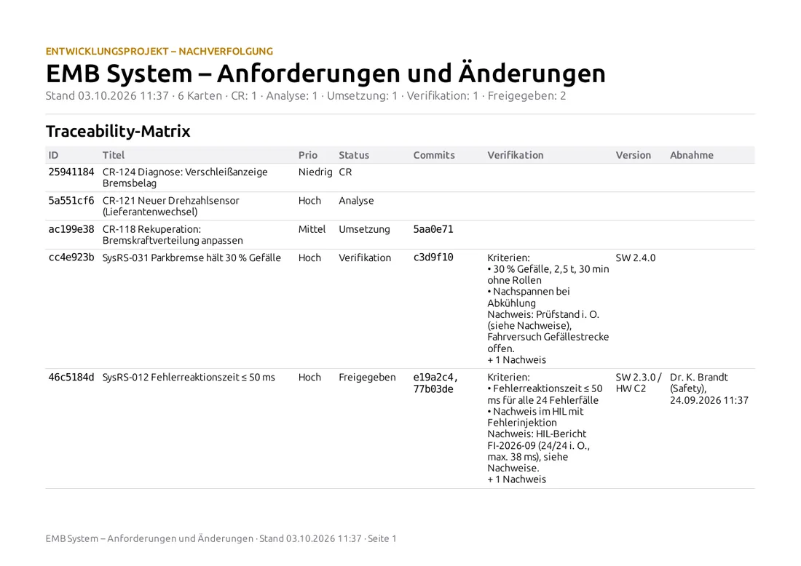
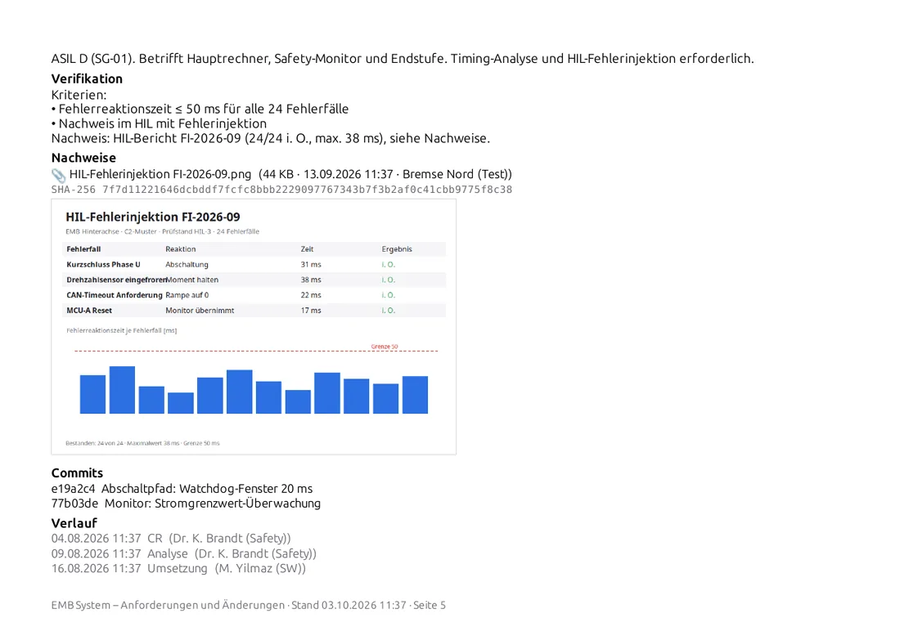
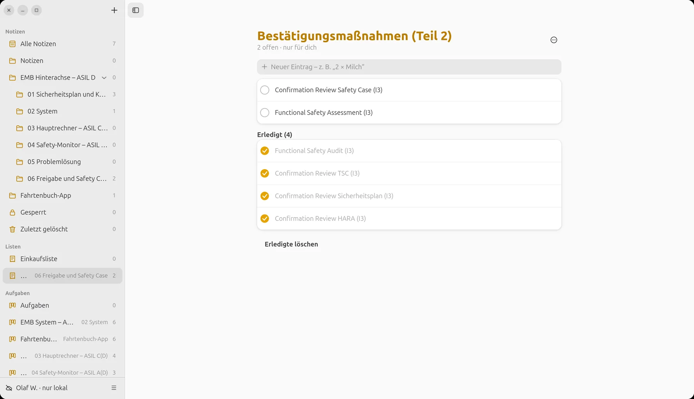

LiNotes
LiNotesEin ASIL-D-Projekt.
Von der HARA bis zur Freigabe.
Eine elektromechanische Bremse für die Hinterachse – ASIL D, aufgeteilt auf einen Hauptrechner ASIL C(D) und einen Safety-Monitor ASIL A(D). So baust du ein solches Projekt in LiNotes auf, steuerst es mit deinem Team und Zulieferer und bringst es mit lückenlosem Berichtswesen zum Abschluss.

Alle Namen, Anforderungen, Zahlen und Ergebnisse sind erfunden. Die Bilder zeigen die echte LiNotes-App mit diesen Beispieldaten.
1 · Aufbauen
Die Projektstruktur ist
der Sicherheitslebenszyklus.
Ein Ordner für das Item, Unterordner für jede Phase und jedes Element. Darin liegen Notizen, Boards, Pläne und Checklisten nebeneinander – wie in einer Projektablage, nur durchsuchbar und Ende-zu-Ende-verschlüsselt.
Ordner nach Phase und Element.
- 01 Sicherheitsplan und Konzept – Sicherheitsplan, Item-Definition, HARA, funktionales Sicherheitskonzept (ISO 26262-2, -3).
- 02 System – technisches Sicherheitskonzept und das System-Board (ISO 26262-4).
- 03 Hauptrechner – ASIL C(D) und 04 Safety-Monitor – ASIL A(D) – je ein eigenes Board für die dekomponierten Elemente (ISO 26262-5, -6, -9).
- 05 Problemlösung – Fehlerberichte aus Test und Feld.
- 06 Freigabe und Safety Case – Bestätigungsmaßnahmen, Protokolle, Safety Case.

HARA und Sicherheitsziele.
Gefährdungen mit Schwere, Häufigkeit und Beherrschbarkeit als Tabelle, darunter die Sicherheitsziele SG-01 bis SG-03. Jede Anforderung, die später entsteht, nennt „ihr“ Sicherheitsziel – so bleibt der rote Faden sichtbar.

ASIL-Dekomposition:
D = C(D) + A(D).
Das technische Sicherheitskonzept teilt SG-01 nach ISO 26262-9 auf zwei unabhängige Elemente auf: den Hauptrechner (MCU A) mit ASIL C(D) und den Safety-Monitor (MCU B) mit ASIL A(D). Die Analyse abhängiger Fehler und die Hardware-Metriken aus der FMEDA stehen gleich daneben.
- Jedes Element bekommt ein eigenes Board – mit eigenem Team, eigenem Status, eigenem Bericht.
- Unabhängigkeit wird in der Auswirkungsanalyse jeder Karte mitgeprüft.

2 · Steuern
Jede Anforderung, jede Änderung,
jeder Fehler – eine Karte.
Ein Board wird mit einem Klick zum Entwicklungsprojekt. Dann tragen Karten eine Kurz-ID, ihren Statusverlauf und die Felder für Auswirkungsanalyse, Verifikation, Version und Commits.
System: Systemanforderungen (SysRS) und Änderungsanträge (CR) des Kunden. Spalten = Status nach SUP.10, die Abnahme in „Freigegeben“ erfolgt durch den Safety Manager.
Auswirkungsanalyse zuerst
Bevor eine Karte in die Umsetzung geht: Welches Sicherheitsziel, welches ASIL, welche Elemente, welcher Regressionsumfang (ISO 26262-8 §8.4.3).
Rollen und Zuständigkeit
Safety Manager, Entwicklung, Hardware, Zulieferer: Jede Karte hat eine zuständige Person. Mit @-Erwähnungen holt man jemanden gezielt dazu.
Zulieferer einbinden
Boards lassen sich einzeln mit verifizierten Personen teilen – der Prüfstand des Zulieferers sieht genau seine Karten, Ende-zu-Ende-verschlüsselt (DIA, ISO 26262-8 §5).
Commits automatisch
Steht die Karten-ID in der Commit-Nachricht, verknüpft LiNotes den Commit mit der Karte – bidirektionale Rückverfolgbarkeit ohne Handarbeit.
Statusverlauf
Wer hat die Karte wann von „Analyse“ nach „Umsetzung“ geschoben? Der Verlauf steht an jeder Karte und im Bericht.
Version
Jede Karte nennt den Stand, in dem sie umgesetzt ist (z. B. SW 2.3.0 / HW C2) – für Konfigurationsmanagement und Freigabe.
Der Projektplan
bis zum SOP.
Phasen nach Teil 3 bis 6, Musterstände B und C, Confirmation Reviews und das Functional Safety Assessment als Meilensteine. Die rote Linie ist heute – ein Blick zeigt, wo das Projekt steht.

3 · Nachweisen
Der Nachweis hängt
an der Anforderung.
Kein Verweis auf ein Protokoll irgendwo auf einem Laufwerk: Testberichte, Messkurven und Screenshots liegen verschlüsselt direkt an der Karte – mit Zeitpunkt, Person und Prüfsumme.


SysRS-012 „Fehlerreaktionszeit ≤ 50 ms“: Auswirkungsanalyse über drei Elemente, Kriterien und der HIL-Bericht mit 24 Fehlerfällen als Nachweis.
Berichtswesen
auf Knopfdruck.
Rechtsklick auf ein Board → „Bericht exportieren“. Heraus kommt eine PDF mit Traceability-Matrix und einer Detailseite je Karte – Beschreibung, Auswirkungsanalyse, Verifikation, Nachweise mit SHA-256 und eingebetteten Bildern, Commits, Verlauf und Abnahme. Als CSV für die Weiterverarbeitung.


Im Rhythmus
Monatlich je Board an Kunde und Assessor – ein PDF je Element, mit Datum im Dateinamen.
Prüfbar
Die SHA-256 im Bericht belegt, welche Datei als Nachweis anhing – auch Jahre später.
Abnahme sichtbar
Wer eine Karte nach „Freigegeben“ geschoben hat und wann, steht in der Matrix.
4 · Abschluss
Bestätigen,
bewerten, freigeben.
Die Bestätigungsmaßnahmen nach ISO 26262-2 – Confirmation Reviews, Audit, Assessment – laufen als Checkliste mit Unabhängigkeitsgrad. Der Safety Case sammelt die Argumentation und verweist auf die Berichte der Boards.
- Protokolle der Reviews als Notiz, Auflagen als Karten im jeweiligen Board.
- Freigabe für die Serienproduktion, wenn alle Karten freigegeben und alle Bestätigungsmaßnahmen erledigt sind.
- Abschlussbericht: die PDF-Berichte aller Boards plus Safety Case – mit Prüfsummen aller Nachweise.

Einordnung
Was LiNotes bei
ISO 26262 abdeckt.
Ehrlich eingeordnet: LiNotes ist ein Werkzeug für Organisation, Änderungsmanagement, Rückverfolgbarkeit und Nachweise. Fachliche Analysen wie FMEDA, FTA oder Timing-Analyse macht es nicht selbst – deren Ergebnisse dokumentiert und verknüpft es.
| Teil | Inhalt | Grad | So im Beispiel |
|---|---|---|---|
| Teil 2 | Management der funktionalen Sicherheit | teilweise | Sicherheitsplan und Rollen als Notiz, Bestätigungsmaßnahmen als Checkliste, Safety Case als Notiz mit Verweisen auf die Berichte. |
| Teil 3 | Konzeptphase | dokumentiert | Item-Definition, HARA mit S/E/C/ASIL-Tabelle, Sicherheitsziele und funktionales Sicherheitskonzept als Notizen. |
| Teil 4 | Produktentwicklung Systemebene | teilweise | Technisches Sicherheitskonzept, Systemanforderungen als Karten mit Verifikation und HIL-Nachweisen; Integrations- und Testphasen im Projektplan. |
| Teil 5 | Produktentwicklung Hardware | dokumentiert | Hardware-Metriken (SPFM, LFM, PMHF) aus der FMEDA als Ergebnis; Hardware-Änderungen als Karten mit Auswirkungsanalyse. |
| Teil 6 | Produktentwicklung Software | teilweise | Software-Anforderungen je Element als Karten, MC/DC-Bericht als Nachweis, Commits verknüpft. Statische Analyse und Abdeckungsmessung kommen aus deinen Werkzeugen. |
| Teil 7 | Produktion, Betrieb, Service | nicht im Fokus | Möglich: Feldbeobachtung als Fehlerbericht-Board. |
| Teil 8 §5 | Verteilte Entwicklung (DIA) | abgedeckt | Boards gezielt mit dem Zulieferer teilen, Zuständigkeiten an jeder Karte, Ende-zu-Ende-verschlüsselt. |
| Teil 8 §6 | Sicherheitsanforderungen | teilweise | Eindeutige ID, Status, Zuordnung zu Sicherheitsziel und Element, Rückverfolgung zu Commits und Nachweisen. Keine formalen Attribute oder Baselines wie in einem Anforderungswerkzeug. |
| Teil 8 §7 | Konfigurationsmanagement | teilweise | Version an jeder Karte, verknüpfte Commits, Statusverlauf. Baselines und Stände selbst liegen in Git bzw. deinem KM-System. |
| Teil 8 §8 | Änderungsmanagement | abgedeckt | CR-Workflow mit Spalten, Auswirkungsanalyse, Entscheidung, Umsetzung, Verifikation, Abnahme mit Person und Zeit. |
| Teil 8 §9 | Verifikation | abgedeckt | Kriterien je Karte, Nachweise mit SHA-256, Bericht mit eingebetteten Testberichten. |
| Teil 8 §10 | Dokumentation | teilweise | Notizen, Berichte als PDF, alles verschlüsselt und durchsuchbar. Notizen haben keine Versionshistorie – freigegebene Dokumente zusätzlich als PDF-Nachweis mit Prüfsumme ablegen. |
| Teil 8 §11 | Vertrauen in Software-Werkzeuge | beim Anwender | LiNotes ist kein qualifiziertes Werkzeug. Die Werkzeugklassifizierung (TI/TD → TCL) und ggf. Qualifizierung liegt bei dir. |
| Teil 9 | ASIL-orientierte Analysen | dokumentiert | ASIL-Dekomposition D → C(D) + A(D) und Analyse abhängiger Fehler im technischen Sicherheitskonzept, je Element ein Board. |
Einordnung
Und bei
Automotive SPICE.
Bezeichnungen nach Automotive SPICE 3.1; in Version 4.0 sind die Prozesse ähnlich geschnitten. Ein Assessment bewertet deine Arbeitsweise – LiNotes liefert die Arbeitsprodukte und Nachweise dafür.
| Prozess | Inhalt | Grad | So im Beispiel |
|---|---|---|---|
| SUP.10 | Änderungsmanagement | abgedeckt | Änderungsanträge als Karten, Status über Spalten, Auswirkungsanalyse, Entscheidung, Nachverfolgung bis zur Abnahme, Bericht. |
| SUP.9 | Problemlösungsmanagement | abgedeckt | Board „Fehlerberichte“: Meldung, Analyse, Korrektur, Verifikation, Abschluss – mit Ursache und Nachweis. |
| MAN.3 | Projektmanagement | abgedeckt | Projektplan mit Phasen und Meilensteinen, Zuständigkeiten, Prioritäten und Fälligkeiten an Karten, Fortschritt je Spalte. |
| ACQ.4 | Lieferantenüberwachung | teilweise | Gemeinsame Boards mit dem Zulieferer, Testnachweise direkt von ihm; Verträge und Bewertungen außerhalb. |
| SUP.8 | Konfigurationsmanagement | teilweise | Versionen und Commits an den Karten; Baselines im Versionsverwaltungssystem. |
| SUP.1 | Qualitätssicherung | teilweise | Checklisten, Review-Protokolle, Abnahme mit Person und Zeit; Eskalation über Karten. |
| SUP.4 | Gemeinsame Reviews | teilweise | Protokolle als Notiz, Auflagen als Karten mit Zuständigkeit und Nachweis. |
| SYS.2–SYS.5 | System-Anforderungen bis Systemtest | teilweise | Bidirektionale Rückverfolgbarkeit Anforderung ↔ Umsetzung (Commits) ↔ Test (Nachweise) je Karte; Architektur und Testspezifikation in deinen Werkzeugen. |
| SWE.1–SWE.6 | Software-Anforderungen bis SW-Test | teilweise | Wie oben auf Elementebene (MCU A, MCU B), mit MC/DC- und Unit-Test-Berichten als Nachweis. |
| SUP.7 | Dokumentation | teilweise | Projektablage in Ordnern, Berichte als PDF; ohne Dokumenten-Freigabeworkflow. |
Dieses Beispiel ist eine Orientierung, keine Norm- oder Rechtsberatung. Ob ein Vorgehen ein Assessment besteht, entscheiden dein Prozess, deine Nachweise und die Bewertung durch unabhängige Prüfer.
Selbst ausprobieren.
LiNotes ist kostenlos, quelloffen und läuft auf deinem eigenen Server – auch ohne Server lokal.